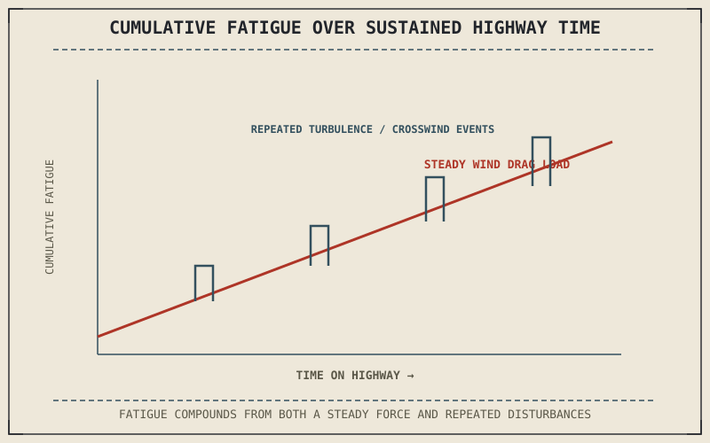

Chapter 8.7 established that aerodynamic drag grows with the square of speed, a fact that stayed mostly theoretical until it's the force a rider's own body is quietly fighting for an hour or more of sustained highway riding. Chapter 9.9 covered traffic's variable-speed, close-quarters demands; sustained highway speed asks something different — steady, high-speed vigilance against forces this book has already quantified but not yet applied to actual fatigue.
Chapter 9.9 closed by naming highway riding and sustained speed as this chapter's subject. This chapter covers it.
Wind Fatigue Is a Direct Consequence of Chapter 8.7's Drag
A rider's body is itself a significant contributor to the frontal area Chapter 8.7 identified as setting drag force, and sustained exposure to that wind pressure over an extended highway ride produces genuine physical fatigue — not from the riding technique itself, but from continuously bracing against a force that grows with the square of speed. This is a direct, quantifiable reason windscreens and riding position matter more on a highway-focused motorcycle than on one meant mainly for short trips, and why a rider without adequate wind protection tires measurably faster at highway speed than the same rider covering the same distance at lower speed.
Crosswind and Traffic Turbulence Compound at Speed
Chapter 8.8 described crosswinds and passing-vehicle turbulence as forces that grow more disruptive at higher speed, and sustained highway travel means encountering both repeatedly rather than as isolated events — a string of trucks passed or passing over an hour multiplies the buffeting sequence Chapter 8.8 described into a recurring demand on a rider's attention and small corrective inputs. Anticipating the timing of an oncoming truck's bow wave, using the technique Chapter 8.8 described, becomes a routine skill on sustained highway riding specifically because it happens so often rather than as a rare surprise.
Highway fatigue isn't just about time in the saddle — it's the cumulative physical cost of continuously bracing against the same drag force Chapter 8.7 showed growing with the square of speed, repeated for as long as the ride lasts.

A graph showing cumulative rider fatigue rising over sustained highway time, with drag force and repeated crosswind or traffic-turbulence events plotted as the two contributing physical loads.
Following Distance Recalculated for Higher Speed
Chapter 9.9 established following distance as stopping distance plus reaction time; at highway speed, both terms in that calculation grow, and grow in different ways — reaction time covers proportionally more physical distance at higher speed, while stopping distance itself increases with the square of speed the same way Chapter 8.7's drag does, since both trace back to the same underlying kinetic energy the brakes or air resistance have to dissipate. A following distance judged adequate in traffic is very likely inadequate once sustained highway speed is reached, and needs to be reassessed rather than simply carried over unchanged.
A Common Misconception, Cleared Up Early
It's easy to assume highway riding is inherently less demanding than technical, low-speed, or twisty-road riding, since the physical inputs — steady throttle, minimal steering correction — look simpler from the outside. The wind fatigue, compounding turbulence exposure, and stopping-distance recalculation this chapter has described are genuine, cumulative physical and mental demands that build over sustained time in a way a short, technically demanding ride doesn't necessarily produce. Highway riding trades moment-to-moment technical difficulty for sustained physical load, not for an absence of real demand.
Where This Leads
Highway riding assumes dry, clear conditions. Reduced grip from rain fundamentally changes the friction circle and stopping distances this chapter and the rest of this part have relied on. Chapter 9.11 turns to riding in rain and reduced grip next.
Key Concepts to Remember
- Sustained wind fatigue is a direct physical consequence of the aerodynamic drag Chapter 8.7 showed growing with the square of speed.
- Crosswind and traffic turbulence from Chapter 8.8 become a recurring, cumulative demand at sustained highway speed rather than an isolated event.
- Following distance needs to be recalculated at highway speed, since both stopping distance and covered reaction-time distance grow faster than speed increases linearly.
Cross-References
| ← Ch. 8.7 | Established aerodynamic drag growing with the square of speed; this chapter connects that force directly to sustained rider fatigue. |
| ← Ch. 8.8 | Described crosswind and turbulence as speed-dependent disruptions; this chapter shows those events compounding over sustained highway exposure. |
| ← Ch. 9.9 | Established following distance as stopping distance plus reaction time; this chapter recalculates that distance for highway speed. |
| → Ch. 9.11 | Covers riding in rain and reduced grip, where the friction circle this part has relied on shrinks significantly. |